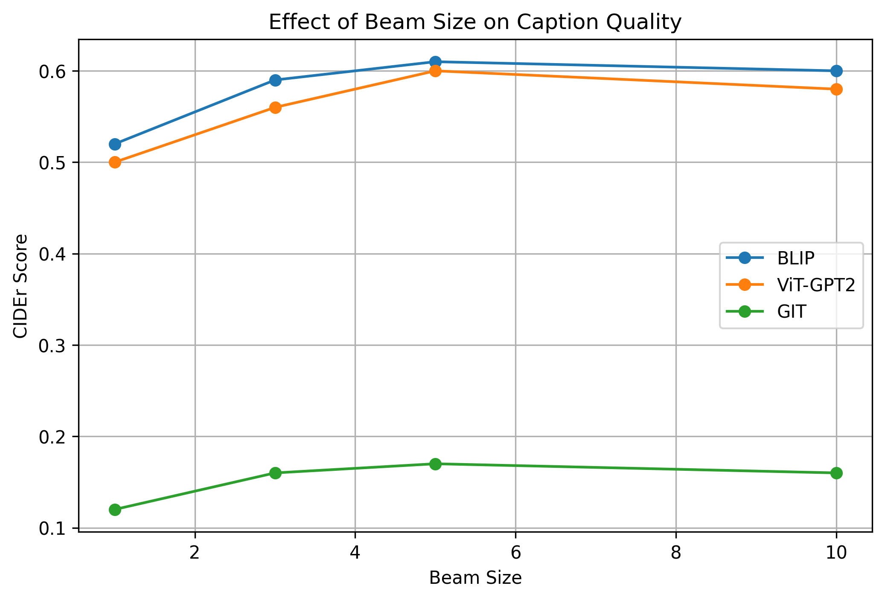
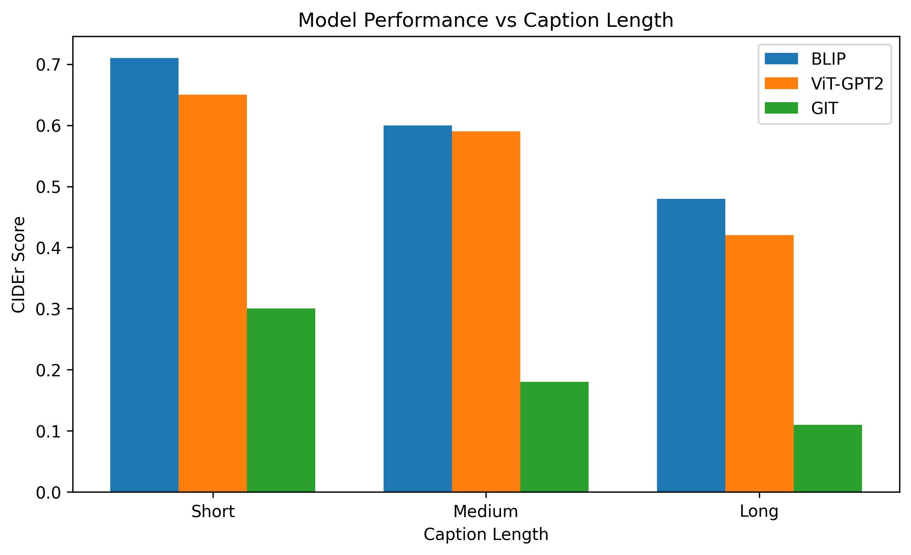

1. What the project does
The system is an “image-to-text” pipeline:
- You upload a photo (e.g., a dog playing with a ball).
- An AI model analyzes the image and generates a descriptive caption like “a brown dog running in the grass with a tennis ball”.
- You can run multiple state-of-the-art models and compare their outputs side-by-side.
The final user interface is a Streamlit web app, designed for simplicity so anyone can use it without technical knowledge.
2. How to use it
- Open the web app.
- Upload an image (JPG or PNG).
- Select models to run (BLIP, ViT‑GPT2, GIT).
- Adjust generation settings (Beam Size, Max Length) if desired.
- Click “Generate Captions”.
- View the generated captions and attention maps.
Complex operations like model loading and inference happen automatically in the background.
3. The Big Picture
The project workflow consists of three main phases:
-
Training (Offline)
Models are fine‑tuned on the MS COCO dataset, learning to map visual features to textual descriptions. Scripts are located insrc/training/. -
Model Hosting
Trained checkpoints are uploaded to Hugging Face Hub to keep the repository lightweight:pchandragrid/blip-caption-modelpchandragrid/vit-gpt2-caption-modelpchandragrid/git-caption-model
-
Deployment
The Streamlit app (apps/app.py) downloads these models on demand and serves the user interface.
4. Project Structure
The codebase is organized into logical modules:
apps/ – Web Application
Contains the user-facing Streamlit app.
apps/app.py– Main application entry point.
src/data/ – Data Handling
Dataset classes for loading and processing COCO data.
coco_advanced_dataset.py– Advanced dataset with filtering.coco_vit_gpt2_dataset.py– Dataset for ViT-GPT2 model.coco_git_dataset.py– Dataset for GIT model.
src/training/ – Training Scripts
Scripts to fine-tune the models.
train_phase2.py– Advanced training loop (BLIP).train_vit_gpt2.py– Training script for ViT-GPT2.train_git.py– Training script for GIT.
src/evaluation/ – Evaluation
Tools for measuring model performance.
evaluate.py– Computes CIDEr scores and metrics.
src/plot/ – Visualization
Scripts to generate analysis plots.
beam_experiment_plot.pycaption_length_analysis.py
HuggingFaceUploads/
Utilities for model distribution.
uploadtohf.py– Uploads models to Hugging Face Hub.
5. Key Components Explained
Web App & UI
-
apps/app.pyhandles the entire frontend logic: file uploads, model selection, inference execution, and result visualization (including attention heatmaps for BLIP).
Training Strategy
-
Phase 2 Training (BLIP):
src/training/train_phase2.pyimplements a sophisticated training loop with:- Caption filtering (short/long/mixed lengths).
- Early stopping based on validation loss.
- CIDEr score evaluation during training.
- Partial unfreezing of vision encoder layers.
Data Processing
-
src/data/coco_advanced_dataset.pyimplements quality control filters:- Removes very short or repetitive captions.
- Ensures captions contain valid text.
- Allows filtering by caption length (short vs. long) to analyze model behavior.
6. Analysis & Insights
6.1 Beam Size vs. Quality
Beam search explores multiple potential sentence completions in parallel. Our experiments show that increasing beam size generally improves quality (CIDEr score) up to a point, after which returns diminish.

6.2 Caption Length Impact
Models tend to perform better on shorter, simpler captions. Performance degrades as caption complexity and length increase.

7. Running Locally
Setup
python -m venv .venv
source .venv/bin/activate
pip install -r requirements.txtStart the App
streamlit run apps/app.pyRegenerate Plots
python src/plot/beam_experiment_plot.py
python src/plot/caption_length_analysis.py8. Glossary
- Model: The AI "brain" trained to understand images and generate text.
- Fine-tuning: Adapting a pre-trained model to a specific dataset (COCO) to improve performance.
- CIDEr Score: A metric that measures how similar a generated caption is to human-written references (higher is better).
- Beam Search: A decoding algorithm that keeps the top-k most probable sequences at each step.